Build Atelier 1.0.0 / Minecraft 26.3
Build Atelier User Guide — Basics
This introductory guide covers the basic controls of Build Atelier. If you are new, follow the steps below to try Copy, Move, Stack, and Delete.
For more detailed controls, select “View feature details”.
Getting started: installation
Already installed? Continue to “1. Enable Build Atelier” below.
| Game | Minecraft Java Edition 26.3 / Fabric |
|---|---|
| Fabric Loader | 0.19.5 or later |
| Fabric API | Version 0.160.6 or later for Minecraft 26.3 (tested: 0.160.6+26.3). Install this dependency separately. |
| Java | 25 or later |
- Install Fabric Loader for Minecraft 26.3 and prepare a Fabric launch profile. This release is not for Forge, NeoForge, or Bedrock Edition.
- Obtain the compatible Build Atelier JAR from its download page and the Fabric API JAR for Minecraft 26.3. Keep the JAR files intact; do not extract them.
- Launch Minecraft once using the Fabric profile, check that it reaches the title screen, and then close it. Next, open the game directory used by that profile. In the standard launcher, edit the profile under Installations and check Game Directory.
- Place both JARs in its mods folder, creating the folder if needed. When updating, move the old Build Atelier JAR out of mods to avoid duplicate versions.
- Launch Minecraft using the Fabric profile. Open a new Creative world, press B to check that the Build Atelier settings appear, and turn Build Atelier on.
For multiplayer, install the same Build Atelier build and required dependencies on both the server and participating clients. Stop the server before updating and restart it afterward.
1. Enable Build Atelier
In your world, press B to open the Build Atelier settings and turn Build Atelier on. Press B again to close the settings.
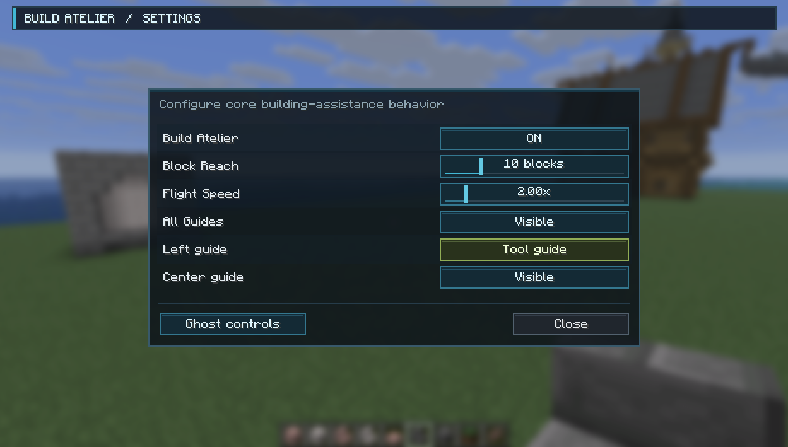
2. Select the region
In a Creative practice world, build a small wall, for example 3 blocks wide, 2 high, and 1 thick. An existing small wall also works.
Press Left Alt and choose Copy. Left-click one corner for Pos1, then right-click the opposite corner for Pos2. Check that the wall is included and the ground is excluded.
If needed, aim at a selection face and press Z, scroll to adjust it, then press Z again. Press X to confirm the region and display the ghost.
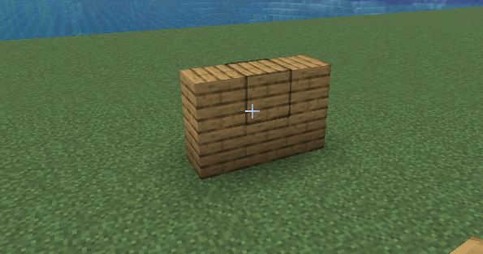
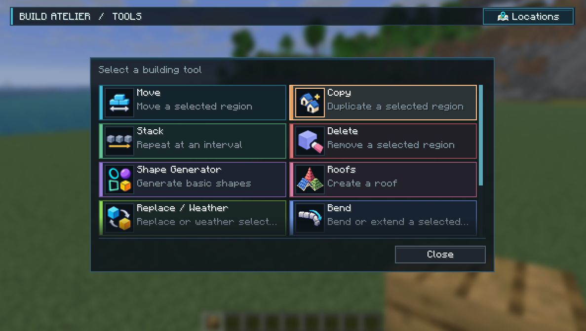
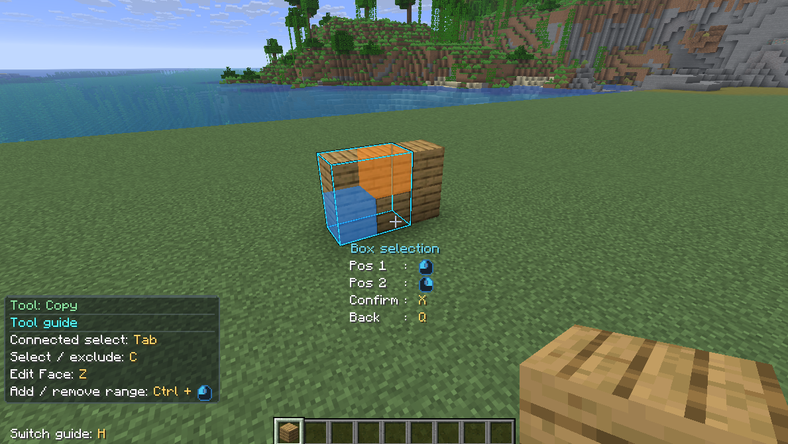
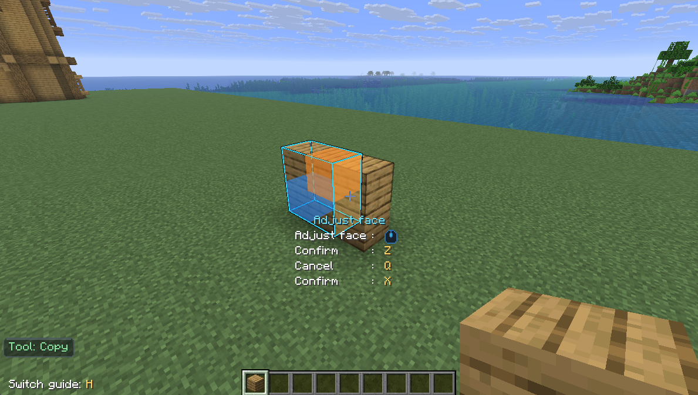
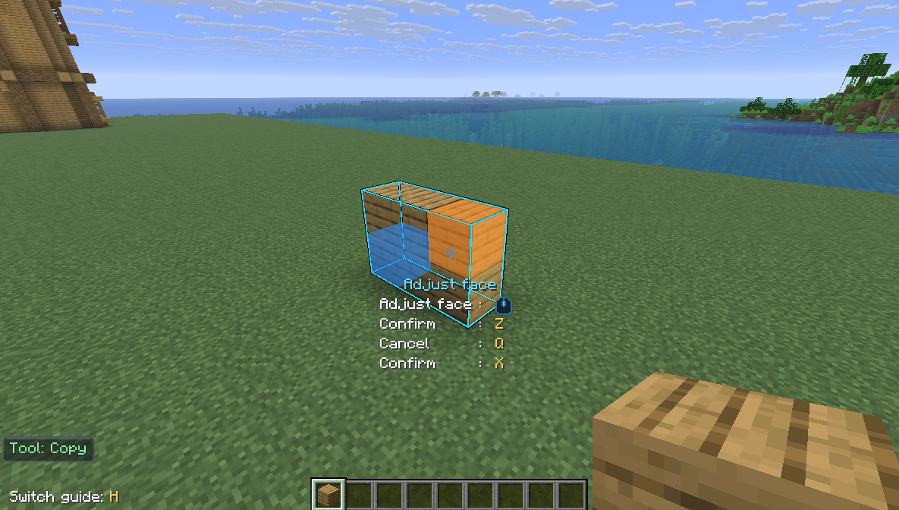
3. Move the ghost
Aim at the ghost, hold the left button, and move your player. Release to keep its position.
Arrows adjust sideways/height; the wheel adjusts depth; R rotates by 90°. Choose an empty spot away from the original wall.
Q returns to selection without placing.
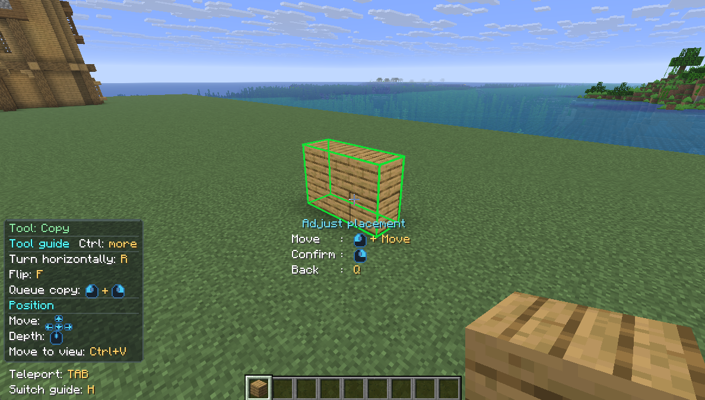
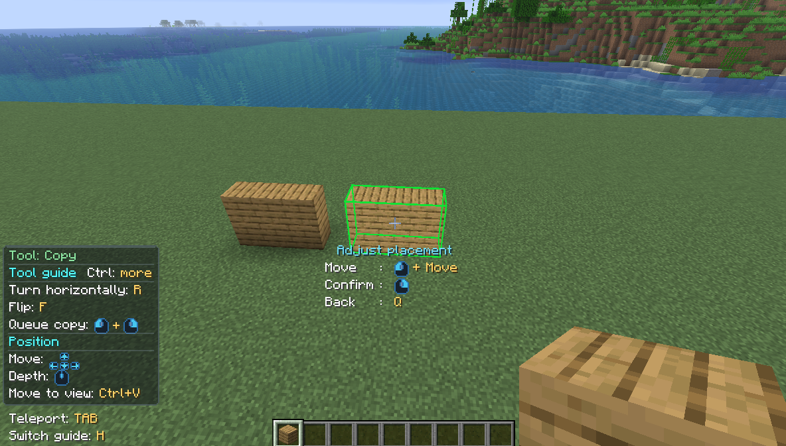
4. Place the copy
Release the left button, then right-click and wait. Success means the original wall remains and a second wall appears.
Right-clicking while holding the left mouse button leaves an additional ghost at that position so you can continue moving the held ghost. For this exercise, release the held button, then right-click to confirm placement.
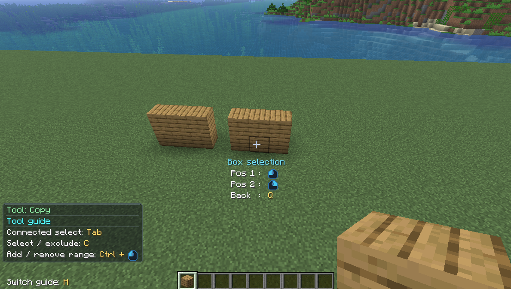
5. Try Undo and Redo
Undo reverses the previous operation; Redo reapplies an operation you have undone.
Before starting a new selection, press Ctrl+Z to undo the copy and Ctrl+Y to reapply it. If unsure, exit with Q first.
If Sneak is bound to Ctrl, use Shift+Z/Y instead.
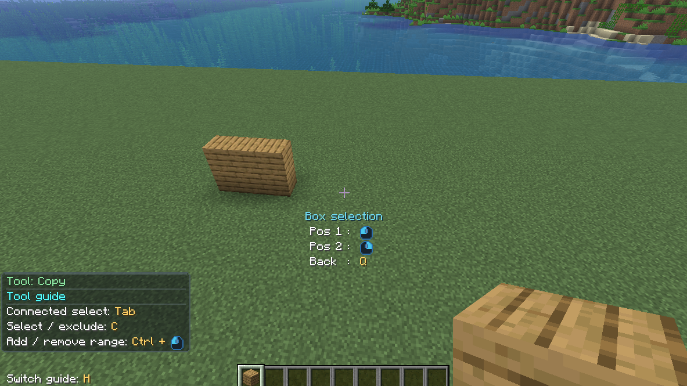
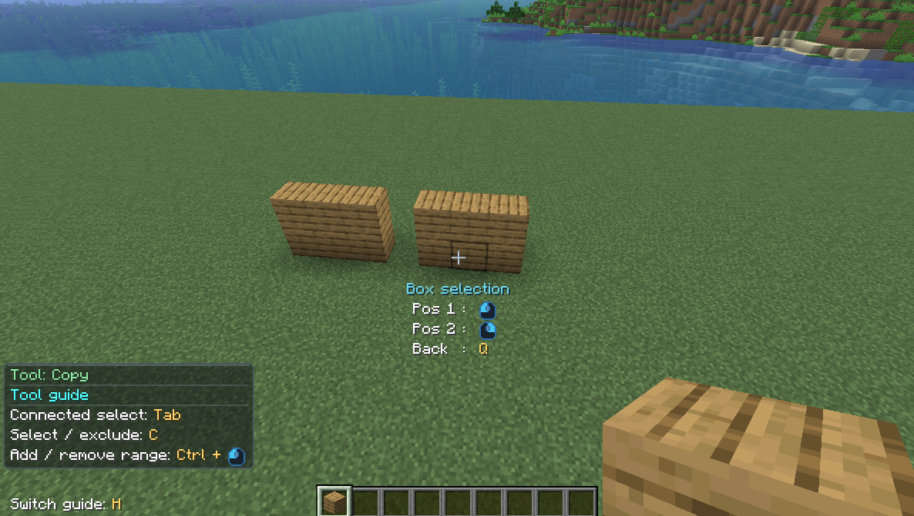
6. Relocate with Move
Choose Move from Left Alt, select only the copied wall, and press X. Move its ghost into another empty area.
The source wall remains in place while you adjust the ghost. Release left and right-click to confirm; only then does the wall move from its source to the destination.
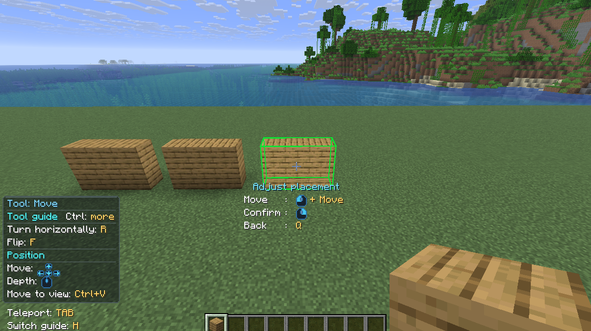
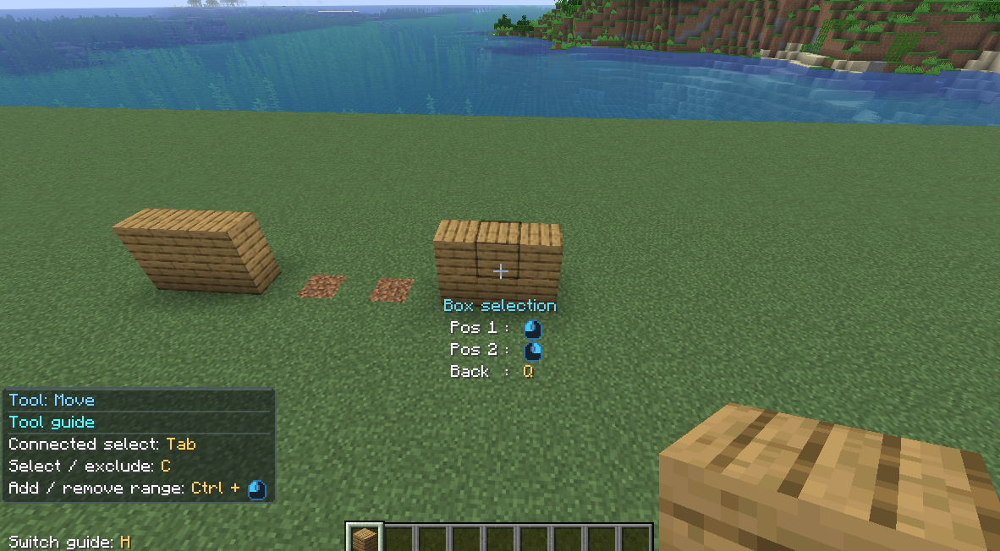
7. Repeat with Stack
Choose Stack, select the wall, and press X. Use left/right arrows or the wheel to extend two or three copies in one direction. Reverse direction to retract.
Check the row and right-click to place it.
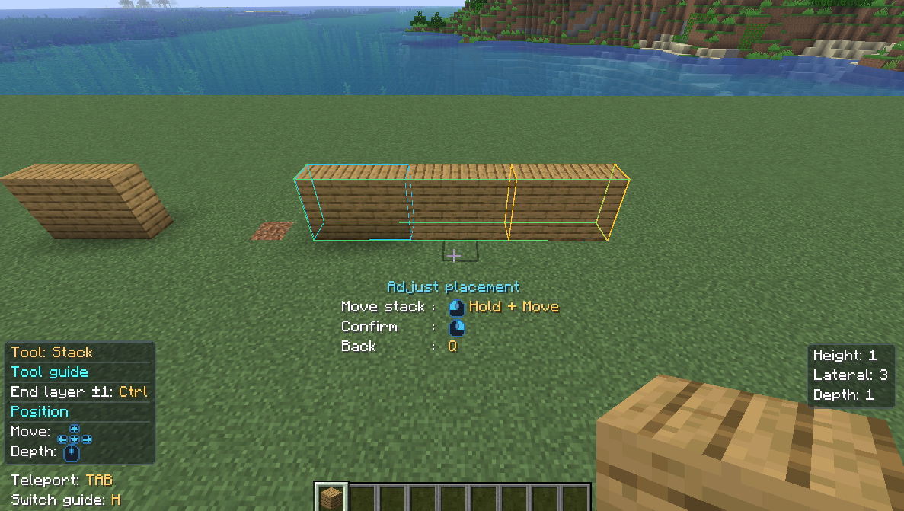
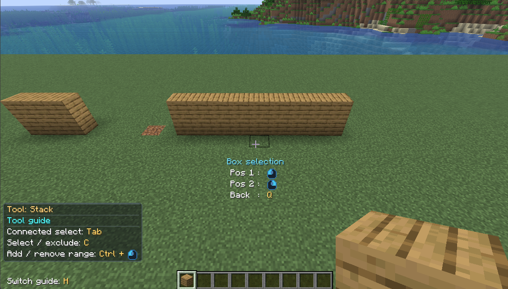
8. Clean up with Delete
Choose Delete and select only unwanted copies. Press X, inspect the deletion region, and right-click.
Keep the ground and wanted walls outside it. Finish by undoing the deletion with Ctrl+Z.
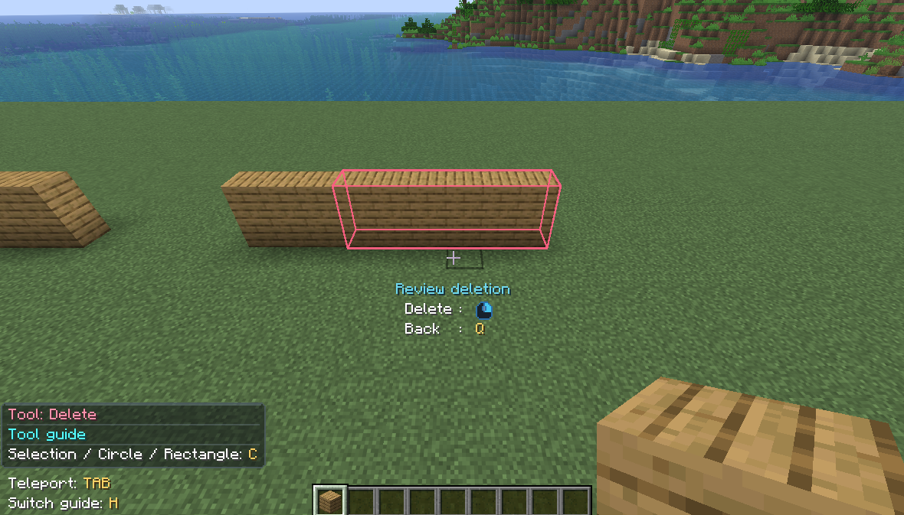
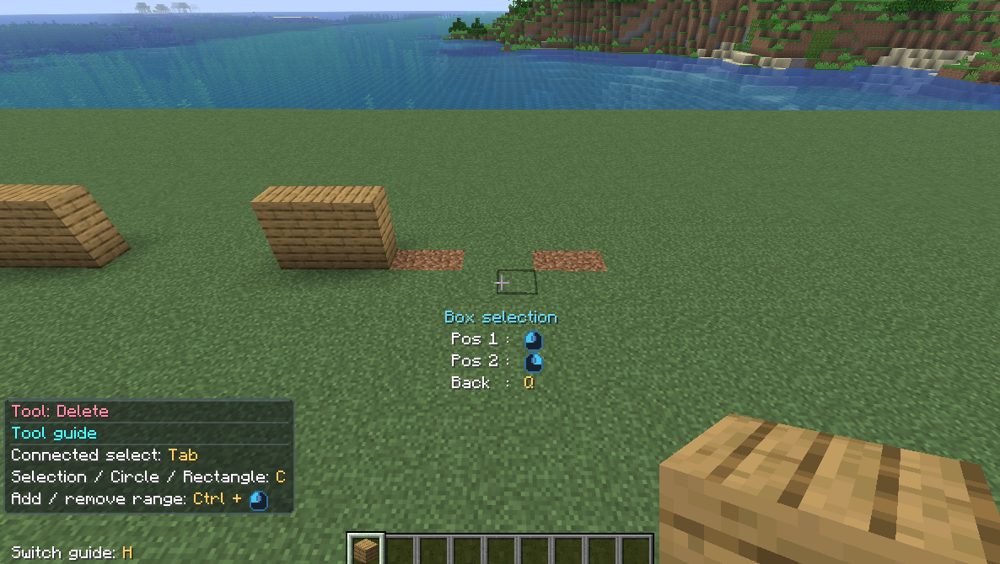
Explore all Build Atelier features
This concludes the introductory guide. Beyond the basic controls covered here, Build Atelier offers many more building features, including the Material Rack, Library, roof tools, and Weathering.
Follow the links below for instructions on each feature.